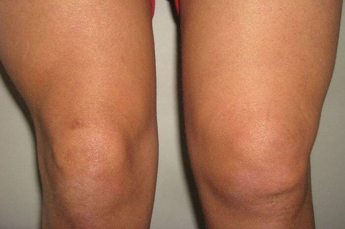

Diagnosticēts artrīts – nesteidzaties likties zem naža!
Mans stāsts par to, ka pusgadu
laikā pilnībā tikt galā ar locītavu iekaisumu uz kājām!
Daži vārdi par mani. Man ir 58 gadi, pēdējos 20 gadus man ir palielināti ceļgalu locītavas, jo spiesta ciest no reimatoīda artrīta. Kam nav saprotams, par ko iet runa, man ir locītavu iekaisums.
Pirms kāda laika situācija vēl bijusi ciešama, bet pēdējā laikā ir grūti staigāt. Īpaši stipras sāpes bijušas labajā ceļgalā. Jebkura fiziska aktivitāte – ceļš uz darbu un no darba, darbs vasarnīcā, pat pārvietošanas mana dzīvokļa robežas kļuvušās visnotaļ problemātiskas.
Apmeklējusi ārstu-ortopēdu. Viņš nosūtīja uz kaut kādu nenormāli sāpīgi masāžu, esmu pat kliegusi sāpes dēļ. Neesmu pat pabeigusi pilnu masāžas kursu, veselas 10 nodarbība. Tad viņš pateicis: tikai operācija. Operācijai kategoriski NĒ. Ņemot vērā manu veselības stāvokli (man ir diabēts), visas brūces ļoti slikti dzīst.
Izmēģināju daudz ko. Sākot no tautas medicīnas metodēm ar ķiploku smērēšanu, vanniņas kājām un vingrošanu līdz par urinēs kompresēm. Nevaru teikt, ka bijuši kaut kādi rezultāti.
Situācija atrisinājās nejauši
Draudzenes meita ieteica nopirkt "" želeja, jo viņas mamma lieto un ļoti apmierināta ar rezultātiem. Mana problēma bijusi akūta, tāpēc pat ilgi nedomājot uzreiz pasūtīju sev divus iepakojumus. Pēc sūtījuma saņemšanas, uzreiz iesmērēju ceļgalus ar šo želeja.
Daži vārdi par šo želeja. To lieto locītavu bojājumu gadījumos. Gēls sastāvā esošie glikozamīns un hondroitīns īpaši efektīvi ārstnieciskos nolūkos. Krēms samazina sāpes ceļgalos un skrimšļos, atjauno balsta un kustību aparātu. Tapāt želeja var lietot osteohondrozes, osteoartozes, artrīta, radikulīta un citu BKA slimību gadījumos.
Sākuma lietoju to ik pēc dienas, pēc tam sākusi smērēt regulāri dažas reizes dienā, un protams pirms gulētiešanas. Pat neskatoties uz to, ka želeja efekts būs pamanāms jau pēc 2 lietošanas dienām.
Jau pēc nedēļas ceļgalu locītavas man VISPAR vairs nesāpēja. Grūti aprakstīt manu prieku un gandarījumu.
Papildus 7-10 dienu laikā pazudis apsārtums blakus ceļgaliem, kā arī pietūkums. Es atkal varēju staigāt bez klibošanas. Īsts prieks.
Pēc mēneša
Smērēju ceļgalus ar želeja 3 reizes diena mēneša laikā. Pumpas ceļgalos samazinājās gandrīz divreiz, es pat sākusi skriet un nodarboties ar sportu, lai palīdzētu locītavām. Pašsajūta kļuvusi daudz labāka, un esmu atgriezusies pie pilnvērtīgas dzīves.
Kur nopirku
Iespējams, jūs mokāt tā paša problēma. Es tiešām varēju saņemties un tikt galā ar ceļgalu sāpēm, tāpēc paradījās šis blogs. Ja jums ir vajadzīgs padoms, tad es pērku želeja šeit.
Iepatīkas, ka šeit var viegli pasūtīt, par ja jūs nekad mūžā neiepērkaties Internetā, ātra piegāde bez krāpniecības. Iespējams, jums jau ir "" želeja lietošanas pieredze, tad uzrakstiet komentārus.